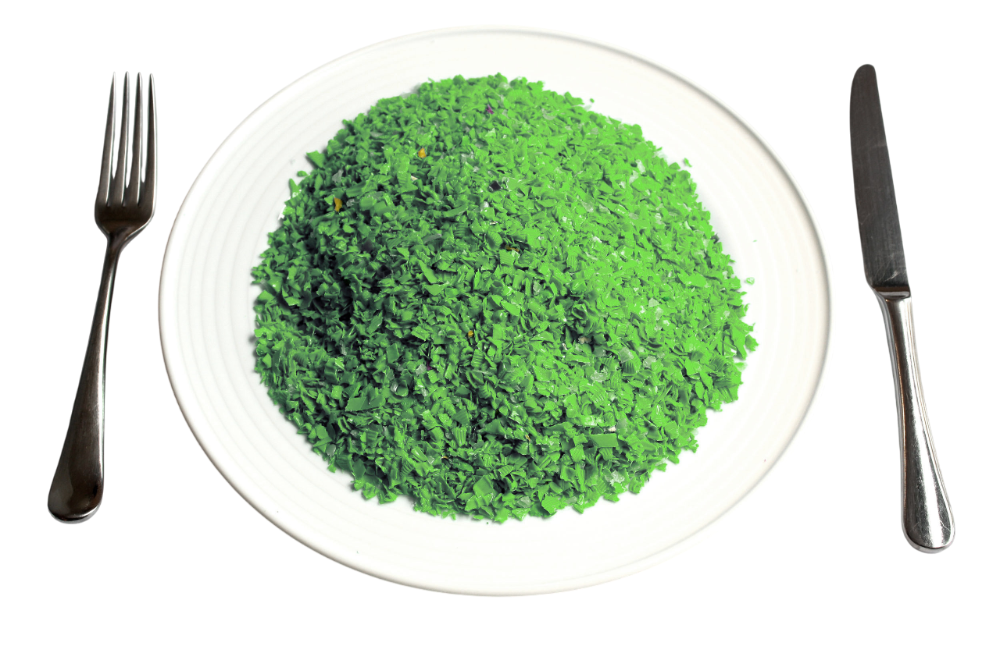

Microplastics are tiny plastic particles less than 5mm in size that are a result of the breakdown of larger plastic items or are intentionally manufactured for use in products like cosmetics and industrial abrasives.
They can be found in oceans, rivers, and even in the air we breathe, posing significant risks to marine life, ecosystems, and human health.
Every year, you ingest 250 grams of microplastics.
This equates to a full dinner plate:
These plastics carry toxic BPA, possibly resulting in:
To mitigate the risks associated with microplastics, consider the following strategies: